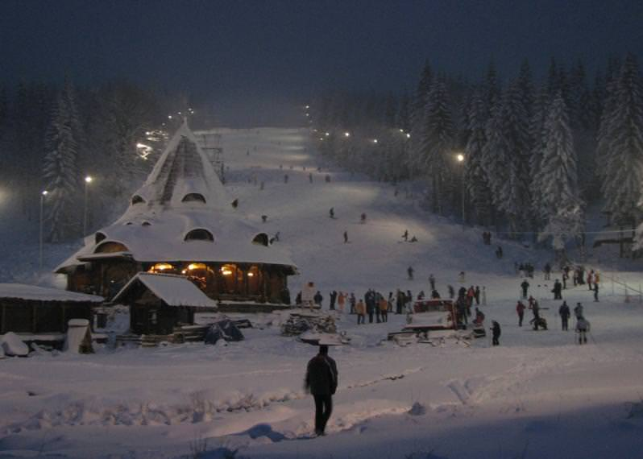

What is snowboard?
Snowboarding is a winter sport that involves descending a slope that is covered with snow while standing on a board attached to a rider's feet, using a special boot set onto a mounted binding. The development of snowboarding was inspired by skateboarding, sledding, surfing and skiing. It was developed in the United States in the 1960s to 1970s and became a Winter Olympic Sport in 1998.
Snowboarding has been around since the 1920s, when boys and men would tie plywood or wooden planks from barrels to their feet using clotheslines and horse reins in order to steer themselves down hills. Modern snowboarding began in 1965 when Sherman Poppen, an engineer in Muskegon, Michigan, invented a toy for his daughter by fastening two skis together and attaching a rope to one end so she would have some control as she stood on the board and glided downhill.
Types of snowboarding
- FREERIDING
- Freeriding is exactly that—riding at one’s leisure in any terrain and only bound by the mountain. This type of riding is best portrayed by the pursuit of riding massive peaks, but it’s not solely restricted to that. Riding natural features and adding freestyle elements to them is common. This riding style is limited by access to mountains and threatened by the dangers that exist (avalanches, crevasses) when seeking to ride in distant areas.
- FREESTYLE
- Whether in terrain parks, backcountry or urban environments— this broad term describes all riding where tricks are performed. Freestyle riding is, and continues to be a popular style of riding, especially with the continuous progression of features and tricks. Its future is only restricted to one’s creativity on a snowboard.
- URBAN
- This style of riding is characterized by the use of existing features within or around urban and human-made landscapes. Handrails, ledges, parking structures, walls, etc. These features offer a playground for riding outside of resorts. The progression of street riding has surged in the last handful years as the level of riding has further adapted to such surroundings. It’s the most accessible form of riding for many younger riders and continues to grow.
- HALF PIPE
- Made popular by the last four Olympics, this part of snowboarding involves performing tricks while riding through a massive U-shaped snow feature at high speeds. Adapted form skateboard vert riding, snowboard half pipe has changed dramatically from the rudimentary days of riding natural gullies to today’s massive pipe productions that implement specialized snow machines and precision shaping. Larger pipes continue to allow riders to ride faster, go bigger and invent new tricks. However, the considerable time and financial costs of creating and maintaining pipes, as well as their limited accessibility pose a threat to its evolution.
Places to go ski/snowboarding near Cluj-Napoca
In the true winter days, when the snow layer looks comfortable and the white out of your eyes wrinkles your head, a clear and clean air can even be welcomed.
If you're passionate about winter sports, or you've never climbed on skis or snowboards, it's all. We recommend going out of the house this winter and enjoying the snow if we have it.
If you are enjoying or even longing for a time spent in nature, somewhere outside the city, here is where we go to the skiing near Cluj (or with snowboard!):
Partia Teleschi Feleacu
It is right here, two steps from Cluj. So if you don't have the time or want to travel a long distances, this is the best choice. In addition to the classic ski or snowboard slopes, you can sail in Fun Park along the tubing route. Or you can climb the climbing wall, you can shoot with the bow, you can get in the zorbing. The little ones benefit from a special space in the amusement park. There is also a beginner's path.
And here is the official page of the resort: partiafeleacu.ro
- Monday: 18:00 – 22:00
- Tuesday, Wednesday, Thursday: 16:00 – 22:00
- Friday: 14:00 - 22:00
- Saturday, Sunday: 10:00 - 22:00
Statiunea Muntele Baisori
Located in Cluj County, close to the town, Muntii Băişorii resort is one of Cluj's favorite destinations, during winter (and not only). Here you can practice alpine and snowboarding, as well as mountain biking or mountaineering.
And here is the official page of the resort: baisoara.ro
- Monday -> Friday: 10:00 – 17:00
- Saturday -> Sunday: 09:00 – 17:00
Buscat Resort – Baisoara
At Buscat, you can also enjoy this season with 3 slopes in total, one for beginners. Here are useful tips for the December 2018 season: buscat.ro
- Monday -> Friday: 10:00 – 17:00
- Saturday -> Sunday: 09:00 – 17:00
Marisel
A more recently developed slope and not far from Cluj (about 40 km), Mărişel is an ideal place for winter sports enthusiasts to have fun in the snow not far from Cluj. It is a resort where you can ski and snowboard. The program of the slope is as follows:
- 02 -> 03.01.2019: 10:00 – 20:00
- 04 -> 06.01.2019: 09:00 – 21:00
Also, to keep up-to-date with any changes and news about Marisel, watch Facebook page
SuperSki Cavnic
We are further away from Cluj, towards Maramures, and we reach the town of Cavnic (151 km from Cluj). Here you have 5 slopes and you can, of course, rent the necessary equipment to enjoy the winter! Program Details, Track Status and Rates:SuperSki Cavnic
Suior
Just 17 km from Baia Mare, near Cavnic, there are the Suior slopes. The ski slopes here are of medium difficulty. Difficult areas alternate nicely with lighter areas, so you can enjoy experience whether you are an experienced skier, or you are in the process of deepening. More details here:Suior

Useful sites:
Shops:
BurtonExtremeAddict(Romania)
Evo
The-house
The Boardroom Shop
About snowboarding facts
Snowboarding wikiSkiCanada
Fresh-meat.ro
Snowboardaddiction
About me:

Hi, I my name is Razvan Pacurariu and as the title says, this blog is about random stuff going on around me and about my passions. I hope you will find these information helpfull :)